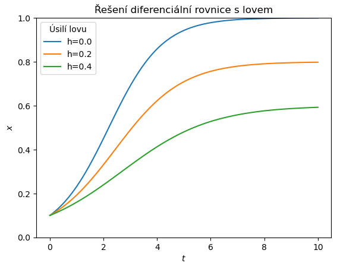

Diferenciální rovnice pro pokročilejší#
Pokročilejší dovedností je například odhalení, jak se rovnice chová při změně parametru.
import numpy as np
import matplotlib.pyplot as plt
import pandas as pd
from scipy.integrate import solve_ivp
pocatecni_podminka = [0.1]
meze = [0,10]
lovy = [0,0.2,0.4]
def rovnice(t, x, h=0):
"""
Logistický růst a lov konstantním úsilím, tj za jednotku času se loví stále stejné procento populace.
"""
r = 1
K = 1
return r*x*(1-x/K) - h*x
t=np.linspace(*meze, 100) # pole s rovnoměrně rozloženými hodnotami, použije se pro vodorovnou osu.
reseni = {f"h={lov:.1f}": solve_ivp(
lambda t,x:rovnice(t,x,h=lov),
meze,
pocatecni_podminka,
t_eval=t,
).y[0]
for lov in lovy }
reseni
{'h=0.0': array([0.1 , 0.1094653 , 0.11970214, 0.13075307, 0.1426639 ,
0.15547284, 0.1692106 , 0.18390033, 0.19955763, 0.21619058,
0.23379968, 0.25237792, 0.27192067, 0.29240312, 0.31376227,
0.33592782, 0.35882253, 0.38236222, 0.40645581, 0.43100527,
0.45590567, 0.48104513, 0.50630486, 0.53155913, 0.55667531,
0.58151381, 0.60592813, 0.62977451, 0.65297471, 0.67545965,
0.69716532, 0.71803661, 0.73802729, 0.75710001, 0.77522631,
0.79238663, 0.80857029, 0.82377548, 0.8380093 , 0.85128773,
0.86363563, 0.87508675, 0.88568373, 0.8954781 , 0.90453028,
0.91290036, 0.92060771, 0.92768877, 0.93418336, 0.94013071,
0.94556941, 0.95053746, 0.95507225, 0.95921055, 0.96298626,
0.96642671, 0.96955758, 0.97240355, 0.97498833, 0.97733461,
0.97946411, 0.98139754, 0.98315846, 0.98478676, 0.98628837,
0.98766373, 0.98891448, 0.99004346, 0.99105471, 0.99195343,
0.99274606, 0.99344019, 0.99404464, 0.99456939, 0.99502566,
0.99542581, 0.99578343, 0.99611329, 0.99643137, 0.99675461,
0.99707156, 0.99736602, 0.99763723, 0.9978848 , 0.99810862,
0.99830892, 0.99848625, 0.99864147, 0.99877577, 0.99889065,
0.99898796, 0.99906983, 0.99913874, 0.99919747, 0.99924914,
0.99929717, 0.99934533, 0.99939768, 0.99945477, 0.99950713]),
'h=0.2': array([0.1 , 0.10728758, 0.11501758, 0.12320444, 0.13186311,
0.14100553, 0.15064066, 0.16077447, 0.17140994, 0.18254704,
0.19418277, 0.20631111, 0.21892394, 0.23202044, 0.24557791,
0.25956483, 0.27394793, 0.28869215, 0.30376065, 0.31911482,
0.33471427, 0.35051682, 0.36647854, 0.38255369, 0.39869478,
0.41485253, 0.43097587, 0.44701199, 0.46290626, 0.47860229,
0.49404192, 0.50916635, 0.52394187, 0.53834452, 0.55234917,
0.56593348, 0.57907786, 0.59176545, 0.60398217, 0.61571668,
0.6269604 , 0.6377075 , 0.64795491, 0.65770232, 0.66695215,
0.6757096 , 0.68398261, 0.69178189, 0.69912087, 0.70601578,
0.71248558, 0.71855197, 0.72423944, 0.72957519, 0.73458815,
0.73928621, 0.74367832, 0.74777887, 0.75160218, 0.75516248,
0.75847391, 0.7615505 , 0.76440621, 0.76705491, 0.76951036,
0.77178624, 0.77389614, 0.77585355, 0.77767188, 0.77936263,
0.78093251, 0.78238805, 0.78373571, 0.78498187, 0.78613285,
0.78719489, 0.78817417, 0.78907677, 0.78990871, 0.79067593,
0.79138431, 0.79203965, 0.79264766, 0.79321363, 0.79373976,
0.79422767, 0.79467915, 0.79509601, 0.79548011, 0.79583333,
0.79615761, 0.79645491, 0.79672722, 0.7969766 , 0.79720511,
0.79741486, 0.79760801, 0.79778674, 0.79795326, 0.79810985]),
'h=0.4': array([0.1 , 0.10515303, 0.11051269, 0.11608123, 0.12186067,
0.12785216, 0.13405595, 0.1404714 , 0.14709699, 0.15393029,
0.160968 , 0.16820591, 0.17563892, 0.18326251, 0.1910776 ,
0.199073 , 0.2072352 , 0.21555054, 0.22400528, 0.23258553,
0.24127731, 0.25006648, 0.25893882, 0.26787998, 0.27687549,
0.28591075, 0.29497105, 0.30404157, 0.31310736, 0.32215336,
0.33116437, 0.34012509, 0.34902011, 0.35783387, 0.36655073,
0.37515489, 0.38363047, 0.39196144, 0.40013167, 0.40812725,
0.41594641, 0.42358392, 0.43103416, 0.43829213, 0.44535344,
0.45221429, 0.4588715 , 0.46532249, 0.4715653 , 0.47759855,
0.48342149, 0.48903396, 0.49443643, 0.49962994, 0.50461618,
0.50939741, 0.5139765 , 0.51835696, 0.52254287, 0.52653892,
0.53035043, 0.53398331, 0.53744407, 0.54073984, 0.54387835,
0.54686794, 0.54971755, 0.55243661, 0.55502999, 0.5575002 ,
0.55985069, 0.56208495, 0.56420653, 0.56621904, 0.56812612,
0.56993148, 0.57163888, 0.57325211, 0.57477504, 0.57621159,
0.5775657 , 0.57884139, 0.58004274, 0.58117384, 0.58223888,
0.58324207, 0.58418768, 0.58508004, 0.58592352, 0.58672254,
0.58748158, 0.58820297, 0.58888393, 0.5895263 , 0.59013213,
0.59070343, 0.59124209, 0.59174994, 0.59222874, 0.59268012])}
df = pd.DataFrame(reseni, index=t) # vytvoření tabulky
df.index.name = "Čas"
df
| h=0.0 | h=0.2 | h=0.4 | |
|---|---|---|---|
| Čas | |||
| 0.00000 | 0.100000 | 0.100000 | 0.100000 |
| 0.10101 | 0.109465 | 0.107288 | 0.105153 |
| 0.20202 | 0.119702 | 0.115018 | 0.110513 |
| 0.30303 | 0.130753 | 0.123204 | 0.116081 |
| 0.40404 | 0.142664 | 0.131863 | 0.121861 |
| ... | ... | ... | ... |
| 9.59596 | 0.999297 | 0.797415 | 0.590703 |
| 9.69697 | 0.999345 | 0.797608 | 0.591242 |
| 9.79798 | 0.999398 | 0.797787 | 0.591750 |
| 9.89899 | 0.999455 | 0.797953 | 0.592229 |
| 10.00000 | 0.999507 | 0.798110 | 0.592680 |
100 rows × 3 columns
fig,ax = plt.subplots(1)
df.plot(ax=ax)
<Axes: xlabel='Čas'>
ax.set(
ylim = (0,1),
title = "Řešení diferenciální rovnice s lovem",
xlabel=r"$t$",
ylabel=r"$x$",
)
ax.legend(title="Úsilí lovu")
fig
